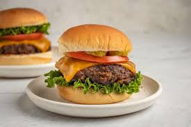

Homemade American-Style Burger

Description
Follow this recipe for the perfect summer lunch thats packed with so much flavor and soooo juicy! This recipe is simple, easy, and fulfilling. You don't need to be a seasoned chef to make this recipe swiftly and deliciously. The ingredients contain fresh ingredients that you most likely have around the house.
Ingredients
- Ground beef
- Cheese Slices
- Smoked paprika
- Garlic and onion powder
- Kosher salt
- Ground black pepper
- Lettuce
- Tomatoes
- Onions
- Condiments of choice
- Burger Buns
Steps
- Combine seasonings and season burgers right before cooking
- Form patties into circles and make an indent in the middle
- Grill your patties on a hot skillet on medium-high hear
- Toast your burger buns
- Once patty is cooked place patty on burger bun and assemble!